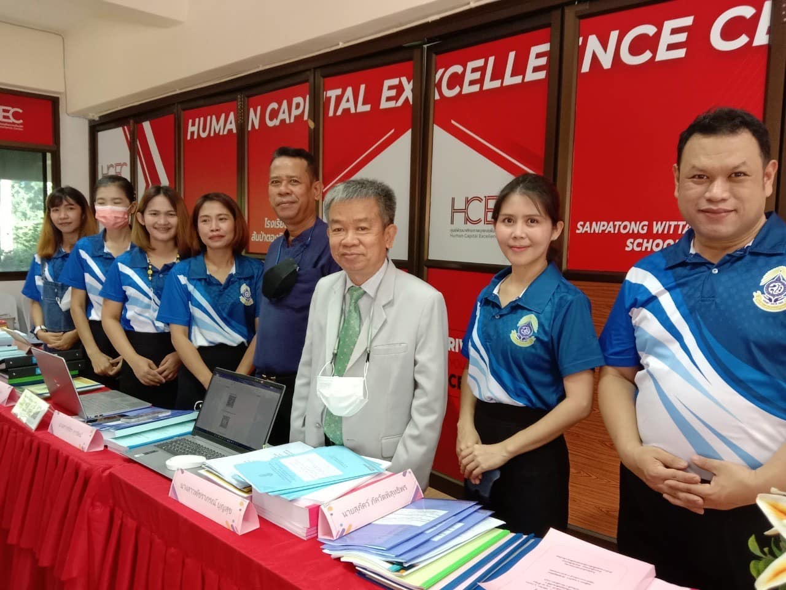
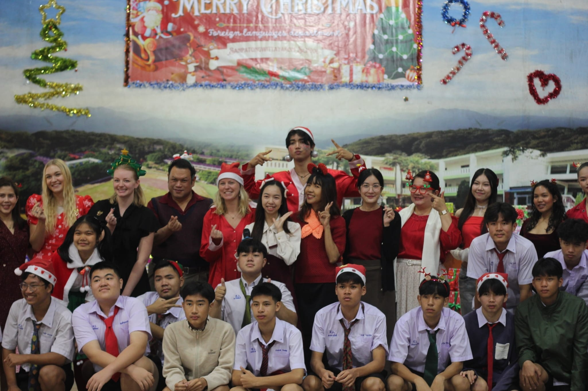
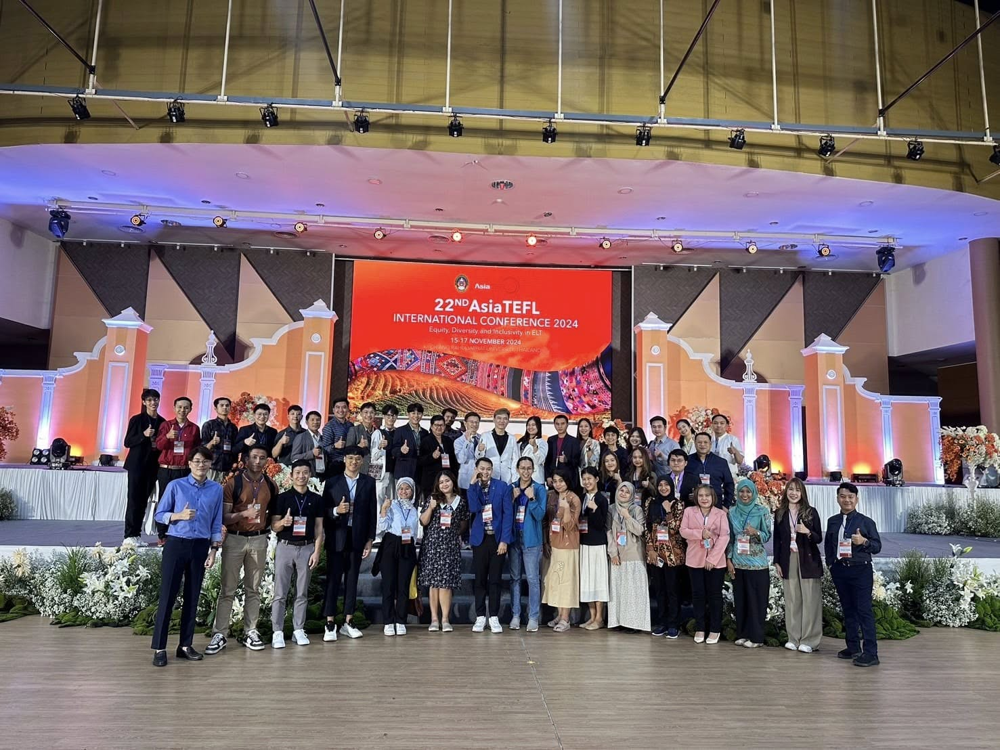
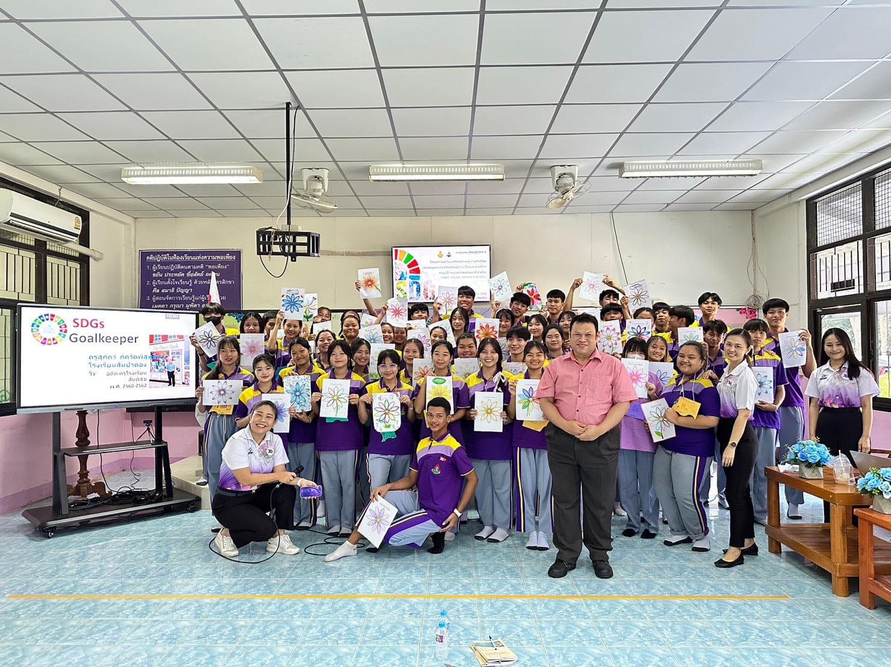
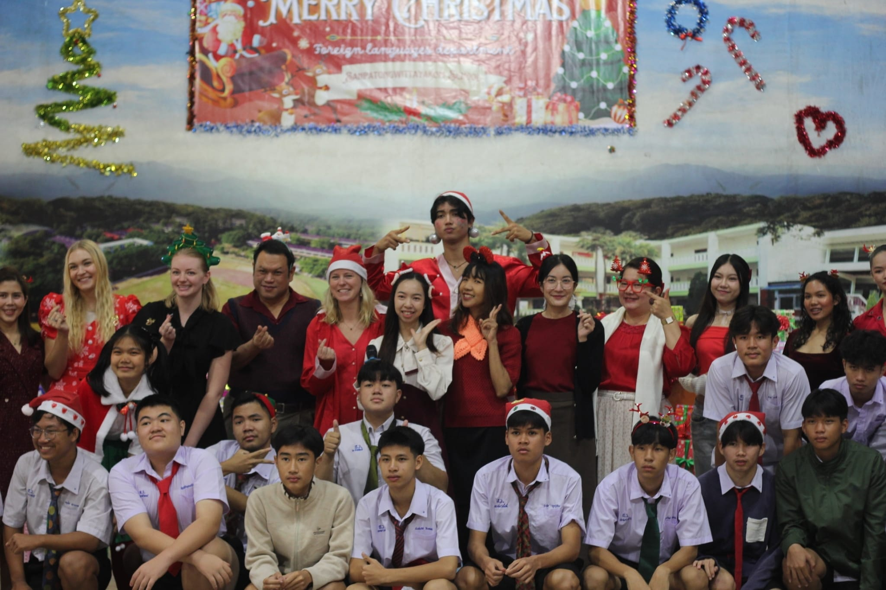
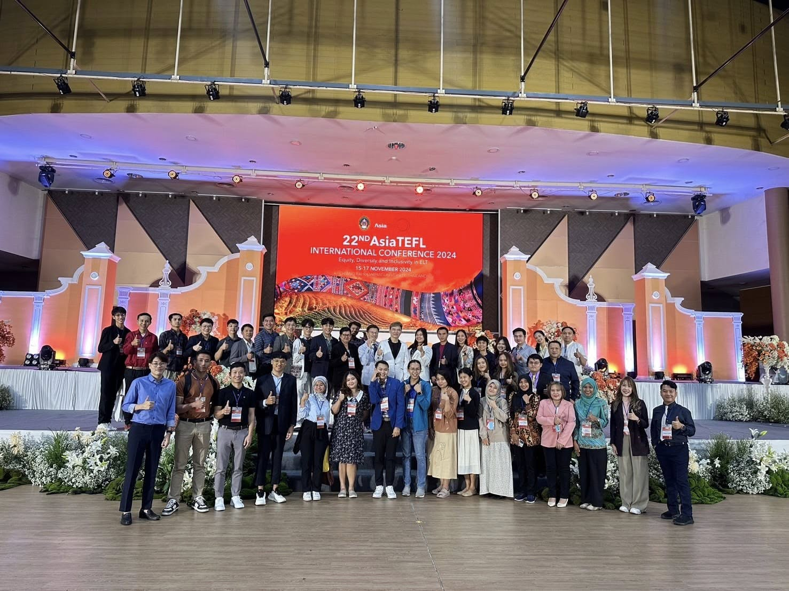
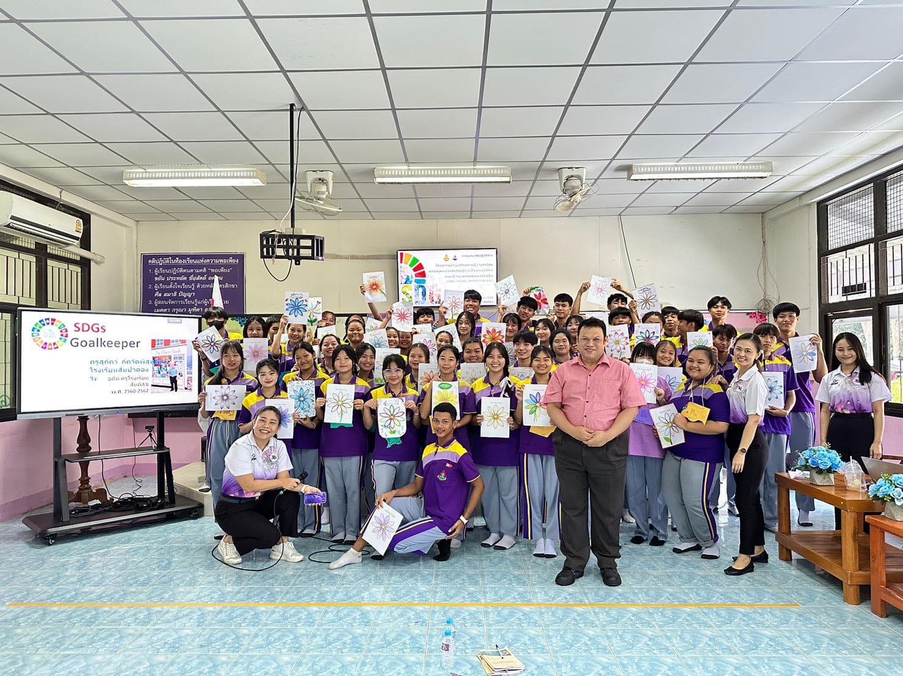
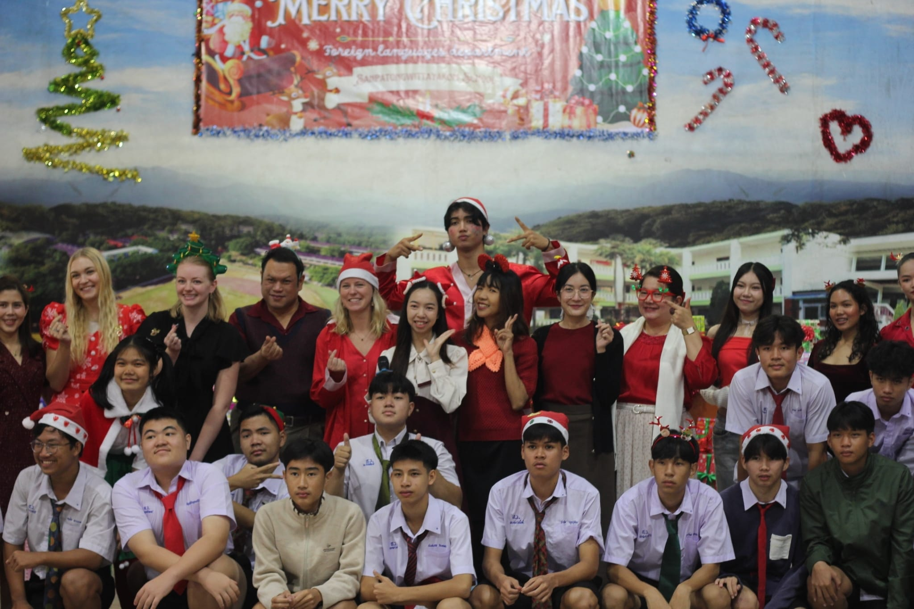
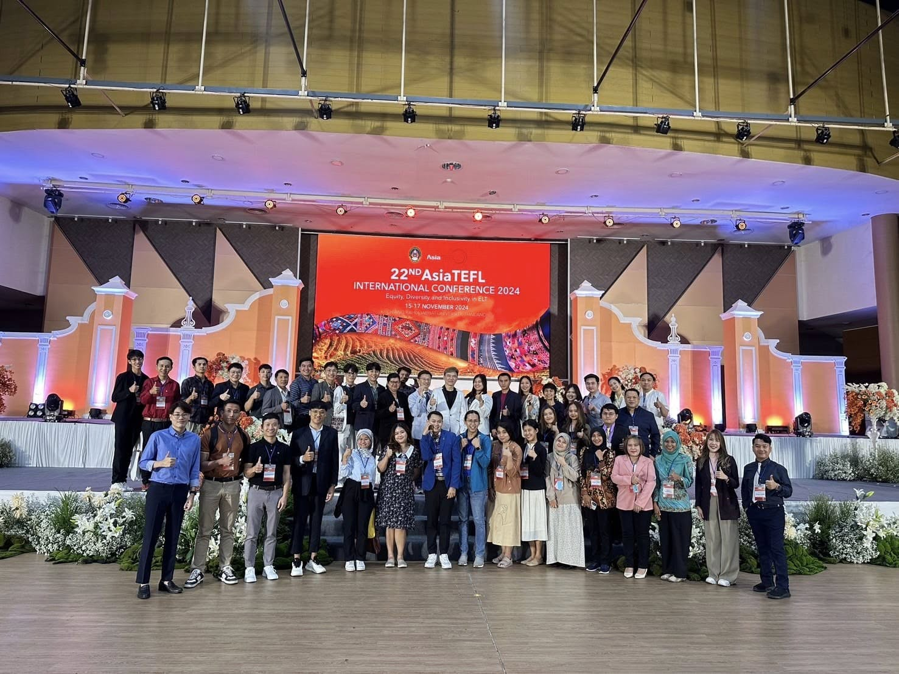
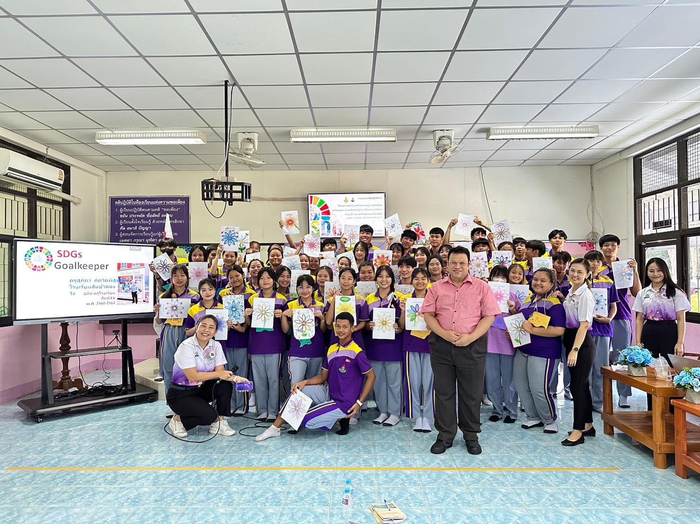

Personal Profile

Mr. Supak Pakkawatpisuttiporn
Position: Senior Professional Level Teacher
School: Sanpatong Wittayakom School
Subjects Taught:
- English Listening and Speaking (Grade 9)
- English Studies (Grade 11)
Special Responsibilities:
- Manager of the Human Capital Excellence Center (HCEC)
- Project Coordinator for the "TO BE NUMBER ONE" initiative
Education Background:
- Bachelor of Education (Second-Class Honors), Chiang Mai Rajabhat University, Thailand
- Postgraduate Certificate in Applied Linguistics, Regional Language Centre (RELC), Singapore
- Certificate in Teaching English to Young Learners (TEYL), University of Oregon, USA
Work Experience:
- Interpreter for police investigators during the 18th SEA Games (1995), Chiang Mai, Thailand
- Mentor teacher for Korean students during TIMC 2016, Chiang Mai, Thailand
- PEER Center Coordinator (Primary Education English Resource Center) in Wiang Haeng District (2013-2017)
- Teacher counterpart to Peace Corps volunteer under the TCCS Project (2015-2016)
My Photo Gallery


 










International Conferences and Seminars:
- Women's Leadership Forum, Crowne Plaza West Hanoi Hotel, Vietnam (2016)
- Service Learning Strategy for EFL Teachers, Bowling Green State University, Ohio, USA (2017)
- 22nd AsiaTEFL International Conference, Chiang Rai Rajabhat University, Thailand (2024)